Laboratori di fisica interattivi
Galileo Sim
Esperimenti da ruotare, smontare e misurare. Ogni laboratorio è una simulazione fisica calcolata in tempo reale nel browser: niente video, niente trucchi.
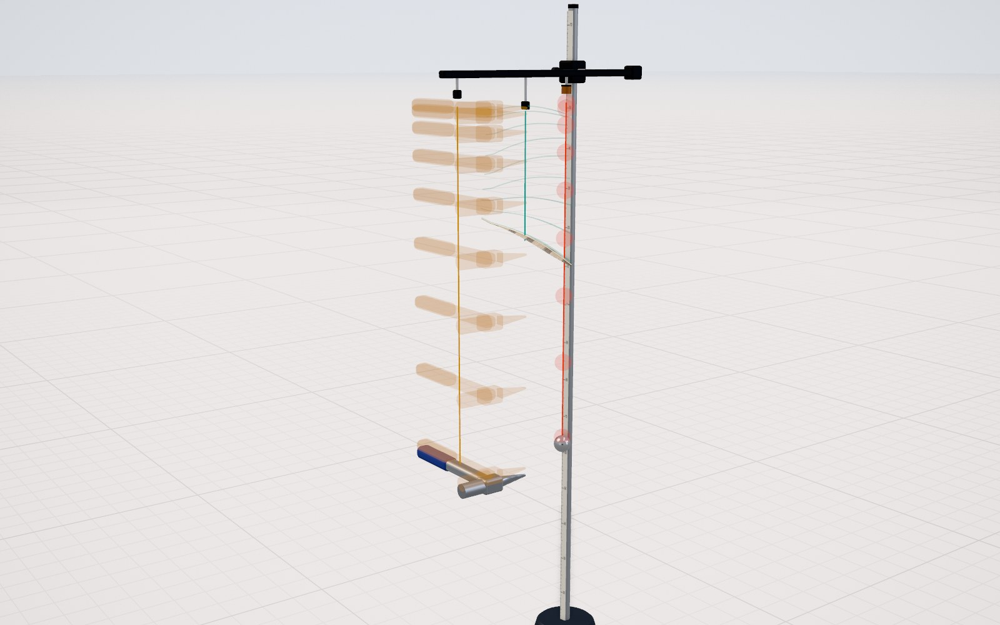
Il moto di caduta
Lascia cadere insieme una pallina di massa variabile, una piuma e un martello da un'asta graduata. Con o senza aria, su sette pianeti, anche lanciandoli: il cronometro misura il millesimo di secondo.
Apri il laboratorio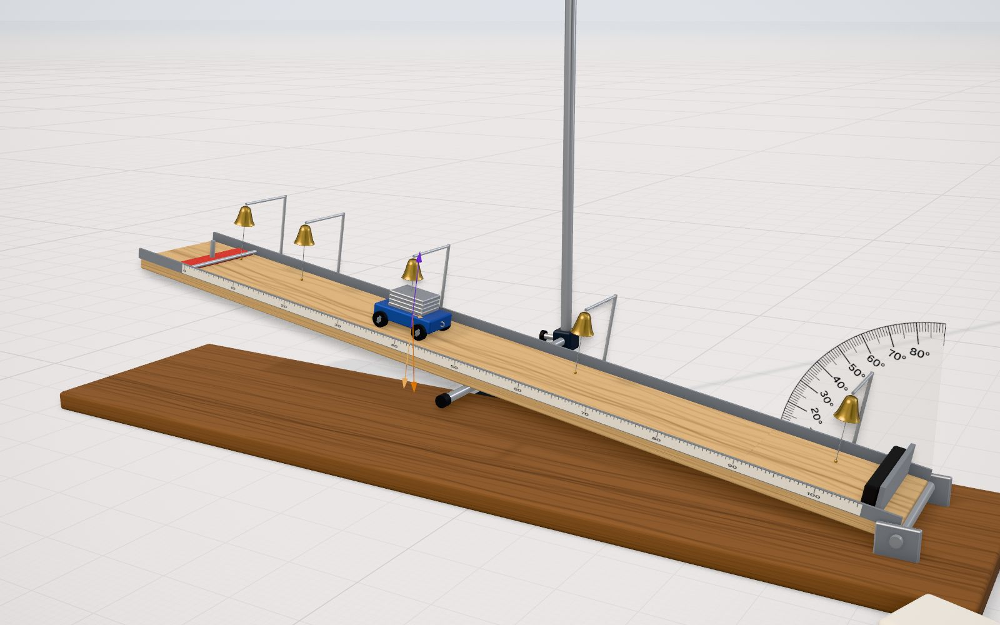
Il piano inclinato
Una tavola di legno che si inclina fino a 60°, un carrello su ruote e un blocco con quattro fondi diversi. Misura le componenti del peso con il dinamometro, cerca l'angolo limite dell'attrito, cronometra la discesa con le fotocellule e ascolta i campanelli di Galileo battere tempi uguali.
Apri il laboratorio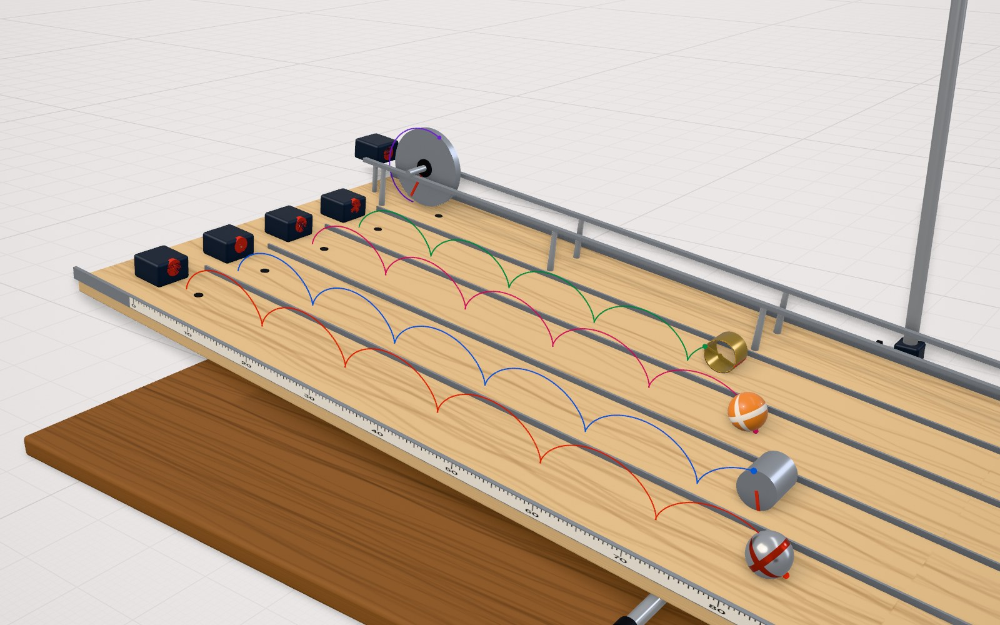
Il moto di rotolamento
Fino a cinque corpi insieme su una tavola a corsie, in piano o inclinata fino a 40°: sfera piena e cava, cilindro, anello, una ruota sui binari e un pattino senza attrito. Guarda la traiettoria di un punto a distanza r dall'asse, le velocità dei punti del bordo, e quando l'attrito non basta più e il corpo striscia.
Apri il laboratorio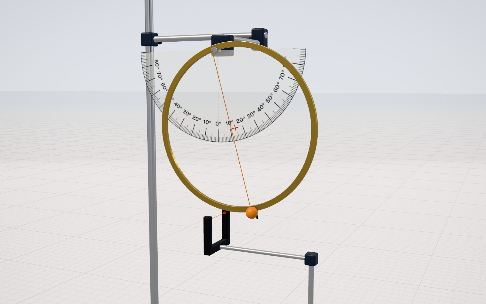
Il pendolo
Una sfera su un filo, di piombo o di sughero, oppure un'asta forata, un disco, un anello appesi a un perno. Conta i periodi con la fotocellula, misura g dalla lunghezza, guarda il periodo allungarsi alle grandi ampiezze e trova il pendolo semplice che batte insieme al corpo rigido.
Apri il laboratorio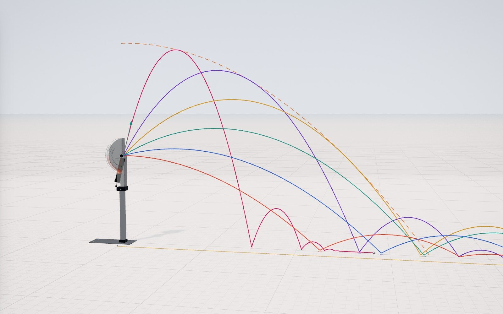
Il moto parabolico
Un lanciatore a molla con goniometro: scegli velocità, alzo e altezza, poi guarda la pallina volare, rimbalzare e rotolare. Centra un bersaglio a terra con due alzi diversi, colpisci un barattolo che cade, confronta la Terra con la Luna. Oppure lascia rotolare la pallina sul piano curvo in legno di Galileo e rifai le sue misure del 1608.
Apri il laboratorio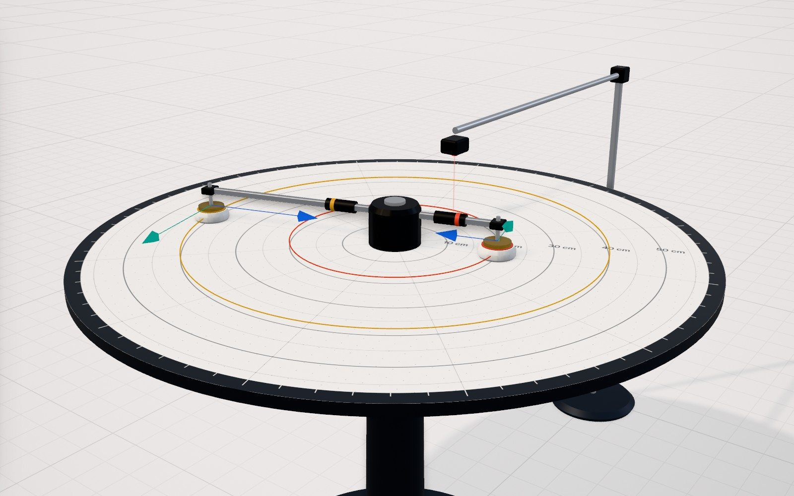
Il moto circolare
Una piattaforma rotante porta dei dischi a cuscino d'aria: il sensore misura la forza verso il centro, la fotocellula il periodo. Sgancia un disco e guardalo partire lungo la tangente, poi sali sulla piattaforma e scopri le forze apparenti.
Apri il laboratorio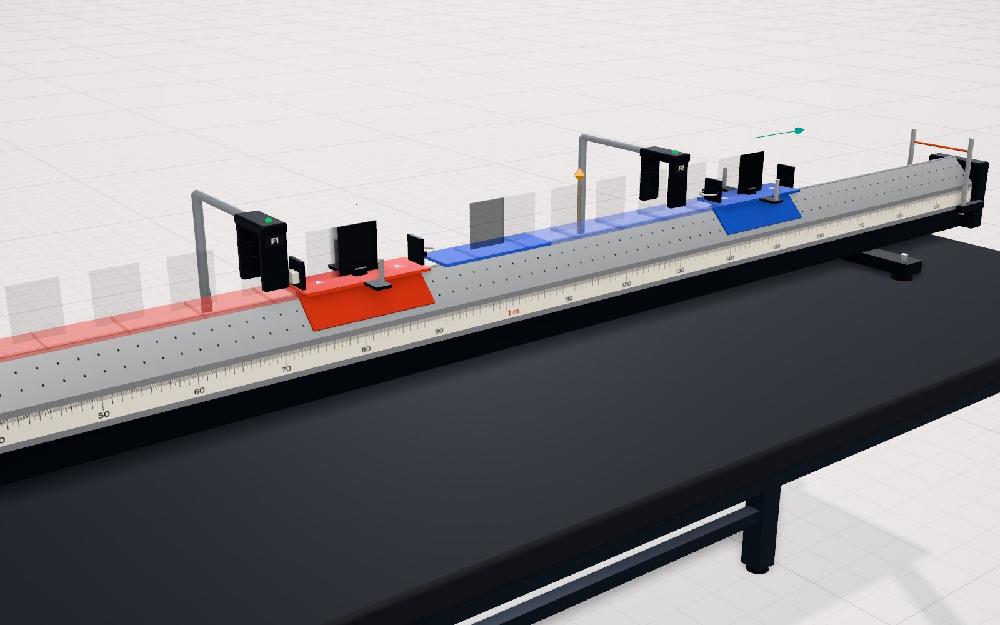
La guidovia
Una rotaia che soffia aria: i carrelli galleggiano quasi senza attrito. Misura con le fotocellule il moto uniforme e quello accelerato, su un piano inclinato o tirato da un pesetto, poi fai urtare i carrelli con molle, gomma o velcro e guarda dove va la quantità di moto.
Apri il laboratorio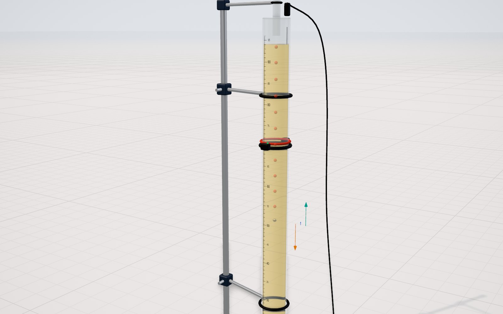
Caduta in un fluido viscoso
Una sfera nella glicerina accelera per un istante, poi scende a velocità costante. Misura il tempo fra due anelli con le fotocellule o a mano e ricava la viscosità; cambia fluido, temperatura, sfera e tubo, fino a vedere dove la legge di Stokes smette di valere.
Apri il laboratorio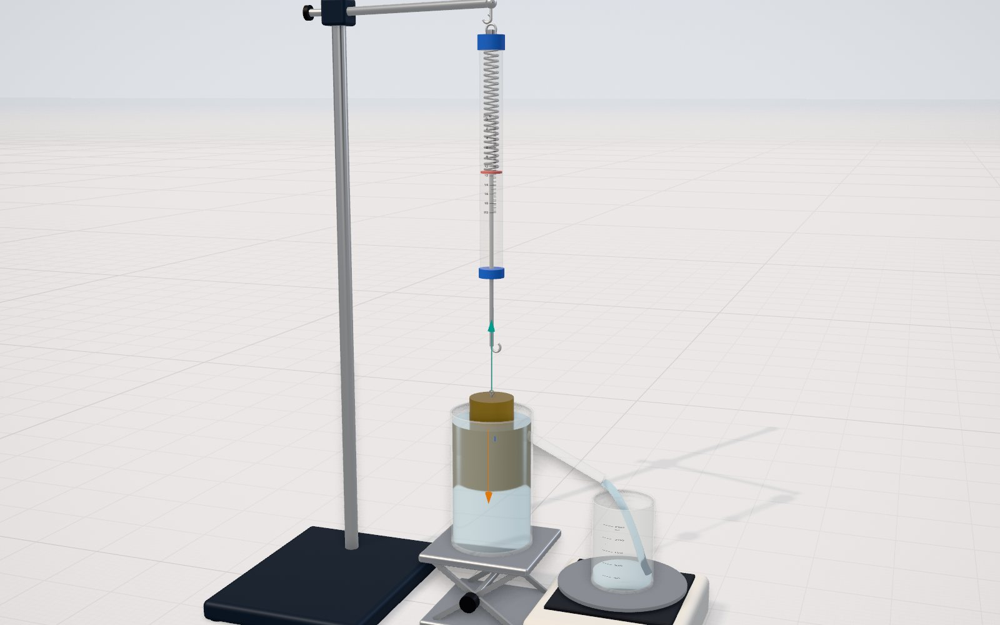
La spinta di Archimede
Appendi un corpo al dinamometro e immergilo: perde peso quanto pesa il liquido che sposta. Misuralo con la bilancia sotto il becher, raccogli il liquido che trabocca dal vaso a sfioro, rifai l'esperimento del secchiello. Poi taglia il filo e guarda cosa affonda, cosa galleggia e come si dispone.
Apri il laboratorio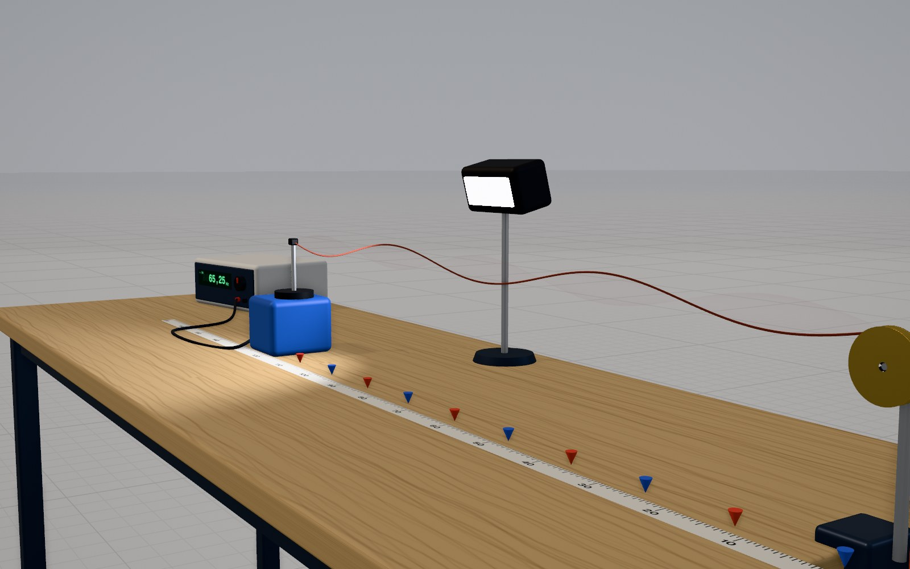
Le onde stazionarie
La corda di Melde, tesa da un peso e scossa da un vibratore, e il tubo sonoro con l'altoparlante, chiuso o aperto. Cerca le risonanze con il generatore, conta i ventri, rallenta il moto con lo stroboscopio, guarda la polvere di sughero raccogliersi nei nodi e ricava la velocità del suono.
Apri il laboratorio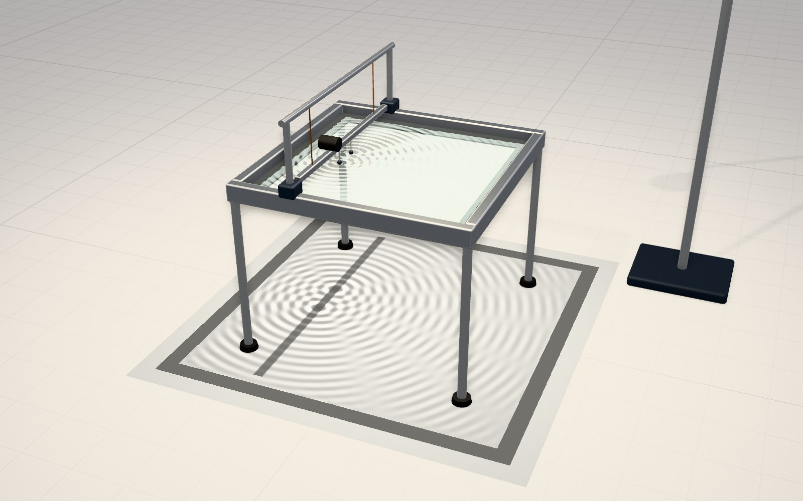
La vaschetta ondoscopica
Una punta che vibra nell'acqua e una lampada che ne proietta le increspature su un foglio, o con uno specchio a 45° su uno schermo. Misura la lunghezza d'onda, fai interferire due sorgenti, manda onde piane contro fenditure, pareti, uno specchio parabolico, una lastra e una lente, e fai correre la punta fino all'onda d'urto.
Apri il laboratorio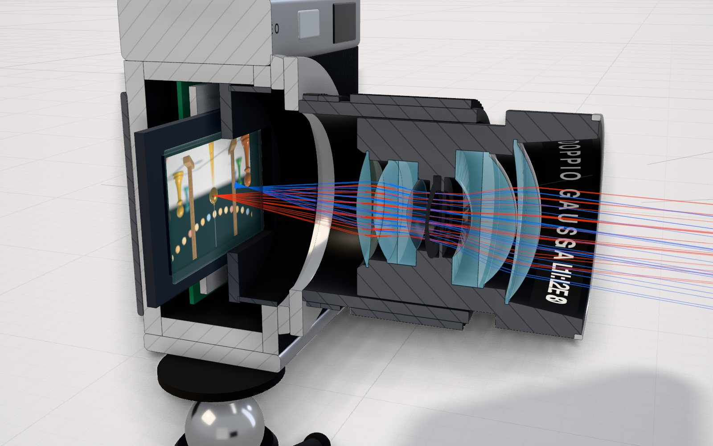
La macchina fotografica
Segui i raggi di luce attraverso un obiettivo vero, lente per lente, fino all'immagine capovolta sul sensore. Poi scatta: diaframma, messa a fuoco, tempo di posa e ISO si comportano come nella realtà.
Apri il laboratorio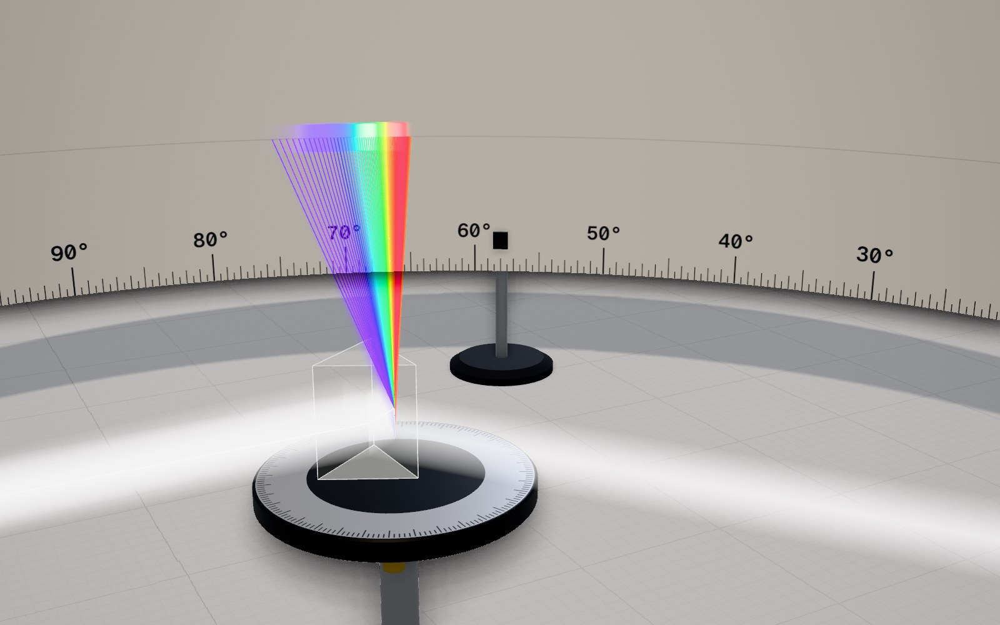
Il prisma ottico
Luce bianca, lampade spettrali o laser attraverso prismi di otto materiali veri. Ruota il prisma fino alla deviazione minima, poi passa allo spettroscopio e misura le righe del mercurio, il doppietto del sodio, la serie di Balmer.
Apri il laboratorio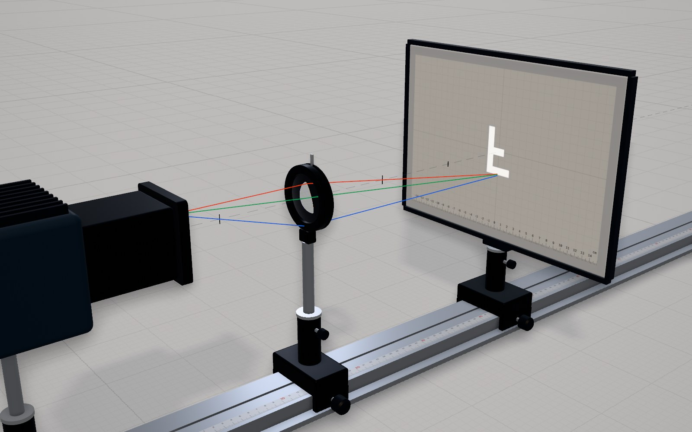
Lenti e immagini
Lenti vere, convergenti e divergenti, su un banco ottico. Cerca l'immagine nitida sullo schermo, misura p e q e ricava la focale, anche con il metodo di Bessel. Guarda nella lente d'ingrandimento e nel cannocchiale, e scopri le aberrazioni sferica e cromatica.
Apri il laboratorio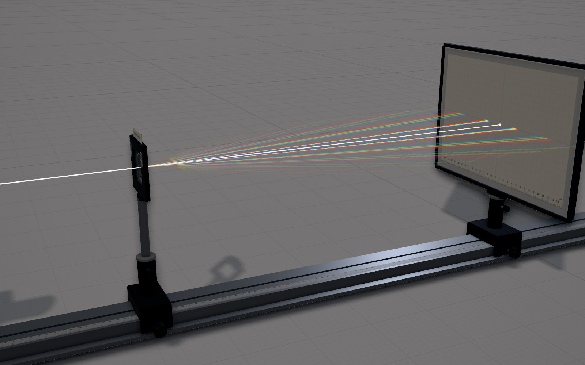
Interferenza e diffrazione
Un banco ottico con laser o luce bianca: fenditure, fori, fili, dischi, reticoli e lenti da spostare lungo la rotaia. La figura sullo schermo è calcolata come onda, dal campo vicino a quello lontano.
Apri il laboratorio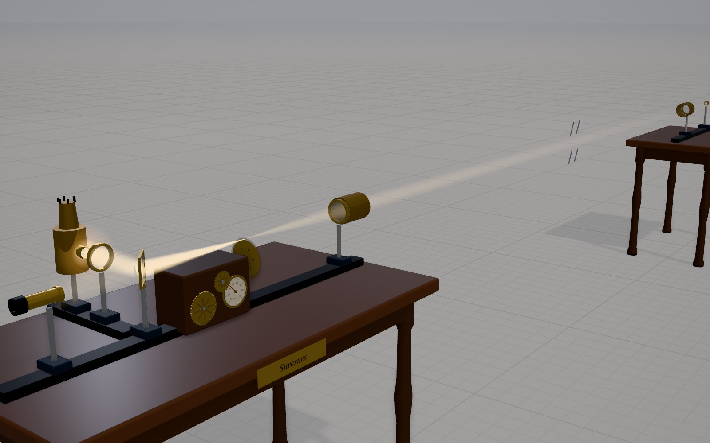
L'esperimento di Fizeau
Parigi, 1849: una ruota da 720 denti taglia la luce in lampi, uno specchio a 8,6 km la rimanda indietro. Accelera la ruota finché la luce sparisce e ricava la velocità della luce; al rallentatore guarda gli impulsi andare e tornare mentre la ruota avanza di mezzo dente. Poi rifallo con la versione moderna: laser, telecamera e tachimetro laser.
Apri il laboratorioAltri laboratori in preparazione.